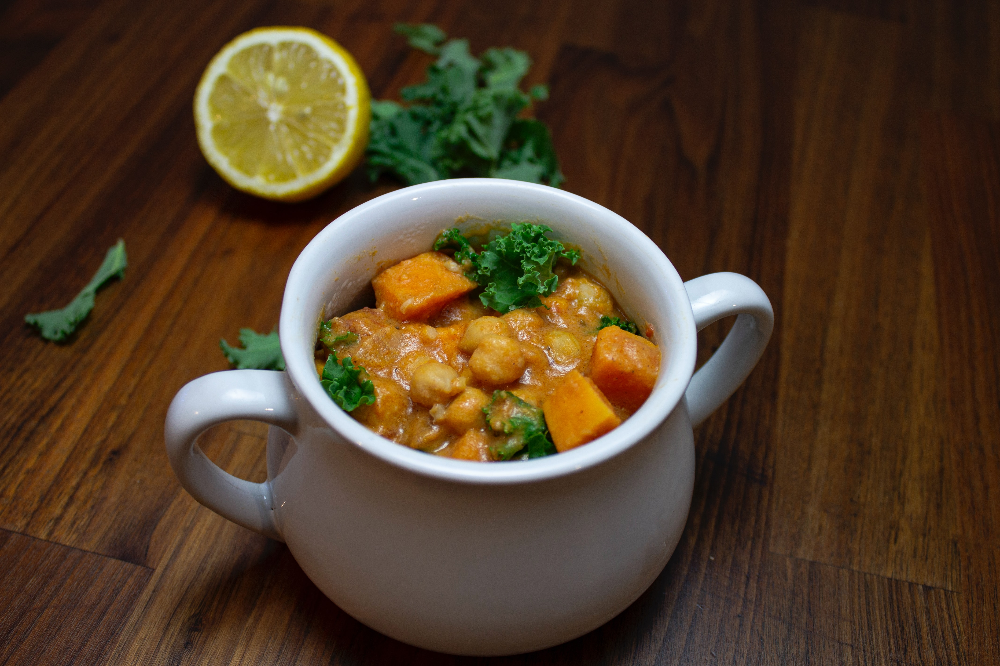

Recipe-Curry Rice

Description
Japanese Curry Rice, or simply "Curry Rice" as it is commonly known in Japan, is a popular and beloved dish that consists of a thick and flavorful curry sauce served over a bed of fluffy white rice. Japanese curry is a sweeter, milder version of Indian or Thai curries, and is often made with a blend of spices that includes curry powder, cumin, coriander, and turmeric, along with other ingredients such as onions, carrots, potatoes, and meat or seafood.
Ingredients
- 1 pound boneless, skinless chicken thighs or beef chuck, cut into bite-sized pieces
- 2 onions, sliced
- 3 carrots, peeled and sliced
- 2 oitatoes, peeled and cut into bite-sized pieces
- 3 cups water or chicken broth
- 1 package Japanese curry roux (available at Asian grocery stores or online)
- Cooked white rice
- Salt and pepper
- Vegetable oil
Steps
- Heat a large pot or Dutch oven over medium-high heat. Add a tablespoon of vegetable oil and heat until hot.
- Add the chicken or beef to the pot and cook until browned on all sides, about 5 minutes.
- Remove the meat from the pot and set it aside. Add the onions and a pinch of salt to the pot and cook until they are soft and translucent, about 5 minutes.
- Add the carrots and potatoes to the pot and stir to combine.
- Add 3 cups of water or chicken broth to the pot and bring to a boil. Reduce the heat to medium-low and simmer for 15-20 minutes, or until the vegetables are tender.
- Break the Japanese curry roux into pieces and add it to the pot. Stir until the roux has melted and the sauce has thickened.
- Return the meat to the pot and stir to combine. Simmer for an additional 5-10 minutes, or until the meat is cooked through.
- Season the curry with salt and pepper to taste.
- To serve, spoon the curry over a bed of cooked white rice.